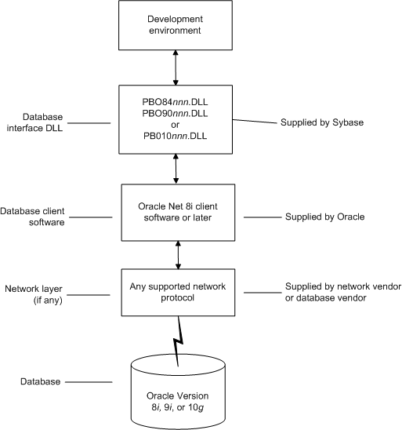

This section describes how to use the native Oracle database interfaces in PowerBuilder.
PowerBuilder provides three Oracle database interfaces. These interfaces use different DLLs and access different versions of Oracle.
| Oracle interface | DLL |
|---|---|
| O84 Oracle8i | PBO84105.DLL |
| O90 Oracle9i | PBO90105.DLL |
| O10 Oracle 10g | PBO10105.DLL |
 For more information Updated information about supported versions of databases
might be available electronically on the Sybase Customer Service and Support Web site
or in
the PowerBuilder Release Bulletin.
For more information Updated information about supported versions of databases
might be available electronically on the Sybase Customer Service and Support Web site
or in
the PowerBuilder Release Bulletin.
The Oracle 10g database interface allows you to connect to Oracle 10g servers using Oracle 10g Database Client or Oracle 10g Instant Client. It supports BINARY_FLOAT and BINARY_DOUBLE datatypes and increased size limits for CLOB and NCLOB datatypes. Oracle 10g clients can connect to Oracle9i or Oracle 10g servers; they cannot connect to Oracle8i or earlier servers.
The Oracle database interfaces support the Oracle datatypes
listed in
Table 6-3 in DataWindow objects and embedded SQL:
The Oracle 10g interface also supports BINARY_FLOAT and BINARY_DOUBLE datatypes. These are IEEE floating-point types that pass the work of performing floating-point computations to the operating system, providing greater efficiency for large computations.
Using the O90 or O10 database interface, PowerBuilder can connect, save, and retrieve data in both ANSI/DBCS and Unicode databases, but it does not convert data between Unicode and ANSI/DBCS. When character data or command text is sent to the database, PowerBuilder sends a Unicode string. The driver must guarantee that the data is saved as Unicode data correctly. When PowerBuilder retrieves character data, it assumes the data is Unicode.
Using the O84 database interface, PowerBuilder detects whether the Oracle client variable NLS_LANG is set. If the variable is set to a value that requires UTF-8 or DBCS characters, PowerBuilder converts command text (such as SELECT * FROM emp) to the appropriate character set before sending the command to the database. However, if DisableBind is set to 0 (the default), PowerBuilder always binds string data as Unicode data. Using O84, you can set the DisableUnicode database parameter to 1 to retrieve data as an ANSI string.
A Unicode database is a database whose character set is set to a Unicode format, such as UTF-8, UTF-16, UCS-2, or UCS-4. All data must be in Unicode format, and any data saved to the database must be converted to Unicode data implicitly or explicitly.
A database that uses ANSI (or DBCS) as its character set might use special datatypes to store Unicode data. These datatypes are NCHAR and NVARCHAR2. Columns with this datatype can store only Unicode data. Any data saved into such a column must be converted to Unicode explicitly. This conversion must be handled by the database server or client.
A constant string is regarded as a char type by Oracle and its character set is NLS_CHARACTERSET. However, if the datatype in the database is NCHAR and its character set is NLS_NCHAR_CHARACTERSET, Oracle performs a conversion from NLS_CHARACTERSET to NLS_NCHAR_CHARACTERSET. This can cause loss of data. For example, if NLS_CHARACTERSET is WE8ISO8859P1 and NLS_NCHAR_CHARACTERSET is UTF8, when the Unicode data is mapped to WE8ISO8859P1, the Unicode data is corrupted.
If you want to access Unicode data using NCHAR and NVARCHAR2 columns or stored procedure parameters, use PowerBuilder variables to store the Unicode data in a script using embedded SQL to avoid using a constant string, and force PowerBuilder to bind the variables.
By default, the O90 and O10 database interfaces bind all string data to internal variables as the Oracle CHAR datatype to avoid downgrading performance. To ensure that NCHAR and NVARCHAR2 columns are handled as such on the server, set the NCharBind database parameter to 1 to have the O90 and O10 drivers bind string data as the Oracle NCHAR datatype.
For example, suppose table1 has a column c1 with the datatype NVARCHAR2. To insert Unicode data into the table, set DisableBind to 0, set NCharBind to 1, and use this syntax:
string var1
insert into table1 (c1) values(:var1);
If an Oracle stored procedure has an NCHAR or NVARCHAR2 input parameter and the input data is a Unicode string, set the BindSPInput database parameter to 1 to force the Oracle database to bind the input data. The O90 and O10 database interfaces are able to describe the procedure to determine its parameters, therefore you do not need to set the NCharBind database parameter.
For a DataWindow object to access NCHAR and NVARCHAR2 columns and retrieve data correctly, set both DisableBind and StaticBind to 0. Setting StaticBind to 0 ensures that PowerBuilder gets an accurate datatype before retrieving.
The TimeStamp datatype in Oracle9i and later is an extension of the Date datatype. It stores the year, month, and day of the Date value plus hours, minutes, and seconds:
Timestamp[fractional_seconds_precision]
The fractional_seconds_precision value is optional and provides the number of digits for indicating seconds. The range of valid values for use with PowerBuilder is 0-6.
When you retrieve or update columns, in general PowerBuilder converts data appropriately between the Oracle datatype and the PowerScript datatype. Keep in mind, however, that similarly or identically named Oracle and PowerScript datatypes do not necessarily have the same definitions.
For information about the definitions of PowerScript datatypes, see the PowerScript Reference .
When a DataWindow object is defined in PowerBuilder, the Oracle datatype number(size,d) is mapped to a decimal datatype. In PowerBuilder, the precision of a decimal is 18 digits. If a column's datatype has a higher precision, for example number(32,30), inserting a number with a precision greater than 18 digits produces an incorrect result when the number is retrieved in a DataWindow. For example, 1.8E-17 displays as 0.000000000000000018, whereas 1.5E-25 displays as 0.
You might be able to avoid this problem by using a different datatype, such as float, for high precision number columns in the Oracle DBMS. The float datatype is mapped to the number datatype within the DataWindow's source.
You must install the software components in Figure 6-3 to access an Oracle database in PowerBuilder.

Before you define the database interface and connect to an Oracle database in PowerBuilder, follow these steps to prepare the database for use:
Preparing an Oracle database for use with PowerBuilder involves these three basic tasks.
You must install and configure the database server, network, and client software for Oracle.
 To install and configure the database server,
network, and client software:
To install and configure the database server,
network, and client software:
Make sure the Oracle database software is installed on your computer or on the server specified in your database profile.
For example, with the Oracle O90 interface you can access an Oracle9i or Oracle 10g database server.
You must obtain the database server software from Oracle Corporation.
For installation instructions, see your Oracle documentation.
Make sure the supported network software (such as TCP/IP) is installed and running on your computer and is properly configured so that you can connect to the Oracle database server at your site.
The Hosts and Services files must be present on your computer and properly configured for your environment.
You must obtain the network software from your network vendor or database vendor.
For installation and configuration instructions, see your network or database administrator.
Install the required Oracle client software on each client computer on which PowerBuilder is installed.
You must obtain the client software from Oracle Corporation. Make sure the client software version you install supports all of the following:
Oracle 10g Instant Client is free client software that lets you run applications without installing the standard Oracle client software. It has a small footprint and can be freely redistributed.
Make sure the Oracle client software is properly configured so that you can connect to the Oracle database server at your site.
For information about setting up Oracle configuration files, see your Oracle Net documentation.
If required by your operating system, make sure the directory containing the Oracle client software is in your system path.
In the PowerBuilder Setup program, select the Typical install or select the Custom install and select the Oracle database interfaces you require.
For a list of the Oracle database interfaces available, see "Supported versions for Oracle".
Make sure you can connect to the Oracle database server and log in to the database you want to access from outside PowerBuilder.
Some possible ways to verify the connection are by running the following Oracle tools:
For instructions on defining the Oracle database interface in PowerBuilder, see "Defining the Oracle database interface".
To define a connection through an Oracle database interface, you must create a database profile by supplying values for at least the basic connection parameters in the Database Profile Setup dialog box for your Oracle interface. You can then select this profile at any time to connect to your database in the development environment.
For information on how to define a database profile, see "Using database profiles".
To connect to an Oracle database server that resides on a network, you must specify the proper connect descriptor in the Server box on the Connection tab of the Database Profile Setup dialog box for your Oracle interface. The connect descriptor specifies the connection parameters that Oracle uses to access the database.
For help determining the proper connect descriptor for your environment, see your Oracle documentation or system administrator.
The syntax of the connect descriptor depends on the Oracle client software you are using.
If you are using Net version 8.x or later, the syntax is:
OracleServiceName
If you are using SQL*Net version 2.x, the syntax is:
@ TNS: OracleServiceName
Net version 8.x example To use Net version 8.x or later client software to connect to the service named ORA8, type the following connect descriptor in the Server box on the Connection tab of the Database Profile Setup dialog box for Oracle 8.x and later: ORA8.
This section describes how you can use Oracle stored procedures.
Oracle defines a stored procedure (or function) as a named PL/SQL program unit that logically groups a set of SQL and other PL/SQL programming language statements together to perform a specific task.
Stored procedures can take parameters and return one or more result sets (also called cursor variables). You create stored procedures in your schema and store them in the data dictionary for use by multiple users.
You can use an Oracle stored procedure in the following ways in your PowerBuilder application:
For information about the syntax for using the DECLARE PROCEDURE statement with the RPCFUNC keyword, see the PowerScript Reference .
Procedures with a single result set You can use stored procedures that return a single result set in DataWindow objects and embedded SQL, but not when using the RPCFUNC keyword to declare the stored procedure as an external function or subroutine.
Procedures with multiple result sets You can use procedures that return multiple result sets only in embedded SQL. Multiple result sets are not supported in DataWindows, reports, or with the RPCFUNC keyword.
The following procedure assumes you are creating the stored procedure in the ISQL view of the Database painter in PowerBuilder.
 To use an Oracle stored procedure with a result
set:
To use an Oracle stored procedure with a result
set:
Set up the ISQL view of the Database painter to create the stored procedure.
Create the stored procedure with a result set as an IN OUT (reference) parameter.
Create DataWindow objects that use the stored procedure as a data source.
When you create a stored procedure in the ISQL view of the Database painter, you must change the default SQL statement terminator character to one that you do not plan to use in your stored procedure syntax.
The default SQL terminator character for the Database painter is a semicolon (;). If you plan to use a semicolon in your Oracle stored procedure syntax, you must change the painter's terminator character to something other than a semicolon to avoid conflicts. A good choice is the backquote ( ` ) character.
 To change the default SQL terminator
character in the Database painter:
To change the default SQL terminator
character in the Database painter:
Connect to your Oracle database in PowerBuilder as the System user.
For instructions, see "Defining the Oracle database interface".
Open the Database painter.
Select Design>Options from the menu bar.
The Database Preferences property sheet displays. If necessary, click the General tab to display the General property page.
Type the character you want (for example, a backquote) in the SQL Terminator Character box.
Click Apply or OK.
The SQL Terminator Character setting is applied to the current connection and all future connections (until you change it).
After setting up the Database painter, you can create an Oracle stored procedure that has a result set as an IN OUT (reference) parameter. PowerBuilder retrieves the result set to populate a DataWindow object.
There are many ways to create stored procedures with result sets. The following procedure describes one possible method that you can use.
For information about when you can use stored procedures with single and multiple result sets, see "What you can do with Oracle stored procedures".
 To create Oracle stored procedures with result
sets:
To create Oracle stored procedures with result
sets:
Make sure your Oracle user account has the necessary database access and privileges to access Oracle objects (such as tables and procedures).
Without the appropriate access and privileges, you will be unable to create Oracle stored procedures.
Assume the following table named tt exists in your Oracle database:
| a | b | c |
|---|---|---|
| 1 | Newman | sysdate |
| 2 | Everett | sysdate |
Create an Oracle package that holds the result set type and stored procedure. The result type must match your table definition.
For example, the following statement creates an Oracle package named spm that holds a result set type named rctl and a stored procedure named proc1. The tt%ROWTYPE attribute defines rctl to contain all of the columns in table tt. The procedure proc1 takes one parameter, a cursor variable named rc1 that is an IN OUT parameter of type rctl.
CREATE OR REPLACE PACKAGE spm
IS TYPE rctl IS REF CURSOR
RETURN tt%ROWTYPE;
PROCEDURE proc1(rc1 IN OUT rctl);END;`
Create the Oracle stored procedure separately from the package you defined.
The following examples show how to create two stored procedures: spm_proc 1 (returns a single result set) and spm_proc2 (returns multiple result sets).
The IN OUT specification means that PowerBuilder passes the cursor variable (rc1 or rc2) by reference to the Oracle procedure and expects the procedure to open the cursor. After the procedure call, PowerBuilder fetches the result set from the cursor and then closes the cursor.
CREATE OR REPLACE PROCEDURE spm_proc1(rc1 IN OUT spm.rctl)
AS
BEGIN
OPEN rc1 FOR SELECT * FROM tt;END;`
CREATE OR REPLACE PROCEDURE spm_proc2 (rc1 IN OUT spm.rctl, rc2 IN OUT spm.rctl)
AS
BEGIN
OPEN rc1 FOR SELECT * FROM tt ORDER BY 1;
OPEN rc2 FOR SELECT * FROM tt ORDER BY 2;END;`
After you create the stored procedure, you can define the DataWindow object that uses the stored procedure as a data source.
You can use Oracle stored procedures that return a single result set in a DataWindow object. If your stored procedure returns multiple result sets, you must use embedded SQL commands to access it.
The following procedure assumes that your Oracle stored procedure returns only a single result set.
 To create a DataWindow object using an Oracle stored
procedure with a result set:
To create a DataWindow object using an Oracle stored
procedure with a result set:
Select a presentation style on the DataWindow page of the New dialog box and click OK.
Select the Stored Procedure icon and click OK.
The Select Stored Procedure wizard page displays, listing the stored procedures available in your database.
Select the stored procedure you want to use as a data source, and click Next.
Complete the wizard to define the DataWindow object.
When you preview the DataWindow object or call Retrieve, PowerBuilder fetches the result set from the cursor in order to populate the DataWindow object. If you selected Retrieve on Preview on the Choose Data Source page in the wizard, the result set displays in the Preview view when the DataWindow opens.
You can define a large object (LOB) as an output parameter for an Oracle stored procedure or function to retrieve large-object data. There is no limit on the number of LOB output arguments that can be defined for each stored procedure or function.
In Oracle 10g, the maximum size of LOB datatypes has been increased from 4 gigabytes minus 1 to 4 gigabytes minus 1 multiplied by the block size of the database. For a database with a block size of 32K, the maximum size is 128 terabytes.
PowerBuilder supports SQL CREATE TYPE and CREATE TABLE statements for Oracle user-defined types (objects) in the ISQL view of the Database painter. It correctly handles SQL SELECT, INSERT, UPDATE, and DELETE statements for user-defined types in the Database and DataWindow painters.
This means that using the Oracle native database interfaces in PowerBuilder, you can:
Here is a simple example that shows how you might create and use Oracle user-defined types in PowerBuilder.
For more information about Oracle user-defined types, see your Oracle documentation.
 To create and use Oracle user-defined types:
To create and use Oracle user-defined types:
In the ISQL view of the Database painter, create two Oracle user-defined types: ball_stats_type and player_type.
Here is the Oracle syntax to create ball_stats_type. Notice that the ball_stats object of type ball_stats_type has a method associated with it called get_avg.
CREATE OR REPLACE TYPE ball_stats_type AS OBJECT (bat_avg NUMBER(4,3),rbi NUMBER(3),MEMBER FUNCTION get_avg RETURN NUMBER,PRAGMA RESTRICT_REFERENCES (get_avg,WNDS,RNPS,WNPS));
CREATE OR REPLACE TYPE BODY ball_stats_type ASMEMBER FUNCTION get_avg RETURN NUMBER ISBEGINRETURN SELF.bat_avg;
END;
END;
Here is the Oracle SQL syntax to create player_type. Player_type references the user-defined type ball_stats_type. PowerBuilder supports such nesting graphically in the Database, DataWindow, and Table painters (see step 3).
CREATE TYPE player_type AS OBJECT (player_no NUMBER(2),player_name VARCHAR2(30),ball_stats ball_stats_type);
In the Database painter, create a table named lineup that references these user-defined types.
Here is the Oracle SQL syntax to create the lineup table and insert a row. Lineup references the player_type user-defined type.
CREATE TABLE lineup (position NUMBER(2) NOT NULL, player player_type);
INSERT INTO lineup VALUES (1,player_type (34, 'David Ortiz', ball_stats_type (0.300, 148)));
Display the lineup table in the Database or DataWindow painter.
PowerBuilder uses the following structure->member notation to display the table:
lineup
======
position
player->player_no
player->player_name
player->ball_stats->bat_avg
player->ball_stats->rbi
To access the get_avg method of the object ball_stats contained in the object column player, use the following structure->member notation when defining a computed column for the DataWindow object. For example, when working in the DataWindow painter, you could use this notation on the Compute tab in the SQL Toolbox:
player->ball_stats->get_avg()
For instructions on connecting to the database, see "Connecting to a database".